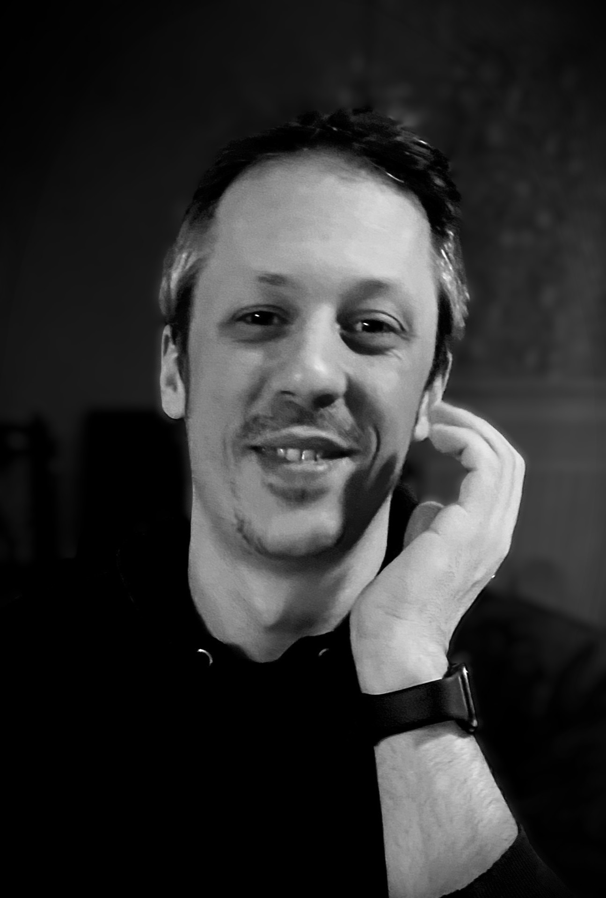

A propos de moi
Je suis Vincent Carvalho, technicien systèmes et réseaux en reconversion professionnelle. J'ai décidé de me lancer dans le développement web et le développement d'applications mobiles. Je suis actuellement en 2ème année en alternance au CESI de Nancy en tant que Technicien Supérieur en Réseaux Informatiques et Télécommunications.
Je suis passionné par l'informatique et les nouvelles technologies. J'aime apprendre et découvrir de nouvelles choses. Je suis curieux et j'aime relever des défis. Je suis également très motivé et je m'investis pleinement dans les projets qui me sont confiés.